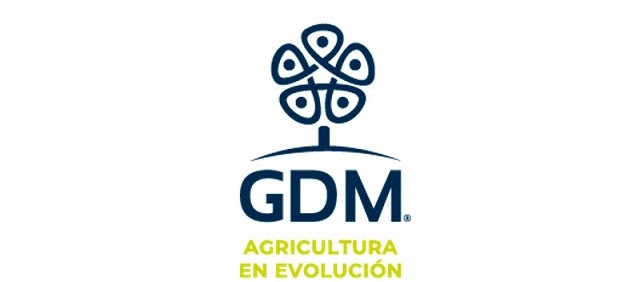

Business Intelligence Consulting
Requirements gathering, business analysis, reporting strategy and collaboration with functional and technical stakeholders.
From business requirements and KPI definition to data modeling, interactive dashboards, validation and documentation. I help organizations transform complex data into clear, actionable insights that enable data-driven decision-making.
Power BI · Microsoft Fabric · Databricks · SQL · Tableau · Figma
Selected client experience

About
I have worked in data visualization and analytics since 2019, participating in end-to-end Business Intelligence projects across multiple industries.
My experience covers functional requirements gathering, KPI and metric definition, dashboard UX design, Figma mockups, semantic modeling, data transformations, SQL queries, dashboard development, data validation and documentation.
I work mainly with Power BI, Microsoft Fabric and Databricks. I also have experience with Tableau, Power Query, DAX, Databricks Dashboards and AI/BI Genie.
My goal is to create analytical solutions that are visually clear, technically reliable and useful for decision-making.
How I can help
Support throughout the complete analytics lifecycle, from understanding the business need to delivering a validated and usable dashboard.
Requirements gathering, business analysis, reporting strategy and collaboration with functional and technical stakeholders.
Interactive dashboards, semantic models, DAX measures, Power Query transformations and business-focused reports.
Definition of indicators, metrics and visualizations aligned with business objectives and decision-making needs.
SQL analysis, data validation, Databricks Dashboards and process-monitoring reports.
Improvement of Power BI models, DAX measures, queries, visual interactions and overall report performance.
Wireframes, Figma mockups and dashboard interfaces designed around business users and reporting objectives.
Tools and capabilities
Power BI, Microsoft Fabric, Tableau, Databricks Dashboards and AI/BI Genie.
SQL, DAX, Power Query, Dataflows, semantic models and data validation.
Figma, wireframes, dashboard mockups, documentation, testing and agile collaboration.
Professional experience
My consulting roles have allowed me to contribute to Business Intelligence solutions for global and regional organizations.
Business Intelligence Analyst providing analytics, dashboard development and data visualization services for clients across consumer goods, automotive, agriculture and customer analytics.
Business Intelligence ConsultingBusiness Intelligence and data visualization consulting, including dashboard development for Mercado Libre and its Mercado Pago business area.
Data Visualization ConsultingSelected client experience
A brief overview of selected organizations, business areas and analytical solutions in which I participated.
Mercado Pago
Developed dashboards from scratch to support business analysis and decision-making.
Sales Analytics — Bolivia
Developed an end-to-end sales reporting solution.
KINTO Share, KINTO Fleet and Financial Analysis
Designed and developed analytics solutions for vehicle reservations, fleet availability and financial reporting.
Research and Development
Business Intelligence solutions supporting seed analysis, selection and process monitoring.
Data Quality, Conversions, Customers, Products and Loyalty
Developed end-to-end analytics solutions supporting CRM data quality, lead conversion, customer analysis, cross-selling and loyalty.
Certifications
Microsoft and Databricks certifications supporting my Business Intelligence and analytics experience.
Microsoft
PL-300 certification. Valid through October 2026.
Microsoft
DP-600 certification for Microsoft Fabric analytics solutions.
Databricks
Databricks analytics, SQL and dashboard certification.
Contact
Available for freelance and remote Business Intelligence projects, dashboard development, data visualization, reporting optimization and analytics consulting.